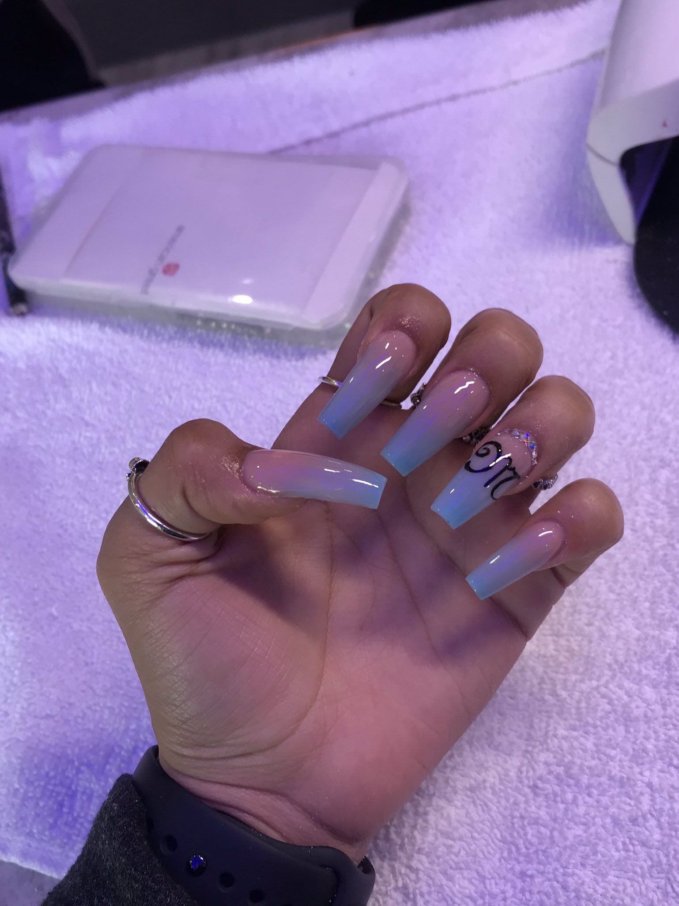

El blog de Kinkilleromedieval
Como género, empieza a fraguarse en el 2010 con PXXR GVNG y KEFTA VOYZ. Sin embargo, empieza a tener un mayor despegue o a tomar forma entre en 2014-2015, cuando en España el paro juvenil era muy alto, coincidiendo también con el caso del YemaGate, donde tienen una trifulca los de PXXR GVNG con un grupo de rap, consiguiendo la ruptura total con lo rapero y gangstarap. También habría que sumarle lo del anterior post: Arkano rapeando 24h en la Puerta del Sol (símbolo de 15-M) para las multis (Guiness y Redbull), por lo que traiciona lo de ser "real" y su compromiso ético-politico de "izquierdas" (habitual en el mundo del rap).
Además, también hay que mencionar lo que comenté de la moción de censura contra Rajoy. Por lo que el panorama sería: : un gobierno que no acaba de terminar, el movimiento rapero como algo obsoleto, el 15-M borrado por esas multis con ese reto y mazo jóvenes cansados de la precariedad o de que se tache a su generación como la más vaga. Dando lugar a algo más que una corriente musical, es decir, metamusical (filosofía/estilo de vida) que tendrá paralelismos con el punk.
La filosofía del trap como género metamusical tiene paralelismos con el punk: como la influencia del Caribe (el reggaetón de Puerto Rico ha sido al trap, lo mismo que el reggae para el punk británico), las mujeres tienen más protagonismo en ambos géneros musicales, frente al Rock o rap, donde las mujeres son inexistentes o una minoría muy reducida; no dan importancia a los directos (como una música estridente, desafinando, haciendo playback, etc.), frente a los conciertos de rap, que eran como una liturgia, donde cantar a un público había un silencio reverencial y como mucho, levantar las manos en el aire y decir sí con la cabeza. Pero además, no se queda solo en eso, sino que también tiene aspectos ideológicos o culturales.
Esto podría ser desde su filosofía de entender sus respectivas corrientes (Trap y Punk), ya que ambos nunca definen su corriente porque dejaría de serlo. También coinciden en su relativismo e incluso hasta en su manera de ser cotidianamente. Un claro ejemplo de esto, sería Cecilio G, que pese a que pertenece al mundo trapero, su actitud es muy punkarra.
Como hemos mencionado, el punk rompió con la desigualdad de género que había entre las estrellas del rock y las groupies (jóvenes admiradoras), lo mismo han hecho en el 2010 el trap, rompiendo las desigualdades de género que había en el rap, solo que en vez de buscar una desexualización mediante la moda (crestas, imperdibles, tachuelas…) y de un estilo de baile como el pogo (que lo que importa es el volumen y fuerza que tengas), las traperas buscan la hipersexualización como forma de reafirmar su sexualidad y apropiándose términos como: puta, pussy, bitch, Rachet (en inglés significa “desgraciada”) etc. Dando lugar a una estrategia de empoderamiento. Hay muchas artistas, pero yo trataré principalmente a la Zowi y a Bad Gyal (será una mención principalmente). Ella se caracteriza principalmente, porque se apropia e invierte la carga valorativa a las palabras mencionadas. Un ejemplo: en una de sus canciones dice: soy una racheta, posturas en las tetas. / Que le follen a Rihanna, esa me come la pepa. Más allá de lo que le dice a Rihanna, lo importante es la resignificación que le da a esas palabras peyorativas y ella misma, definía la palabra rachet, así: “es una chavala de barrio, que combina ropa del Bershka con imitaciones de las grandes marcas. Al sentirse excluida en el sistema en el que vive, se preocupa más por tener las uñas bien hechas, que por votar en las elecciones. Lejos de tratarse de una apología a la abstención electoral, lo que hace esta definición es constatar, que en sociedad hay unos estratos sociales, perfectamente definidos en términos de género, generación y clase, que no votan porque no se sienten representados por los partidos políticos.
Nos encontramos ante una definición que no es "apolítica", sino impolítica, entendiendo la impolítica, como aquello que todavía no ha sido politizado, pero que puede serlo en un futuro. El ejemplo más claro es la manicura que comentaba la cantante. Si hacemos caso a los marxistas, que afirman que el origen de toda explotación se encuentra en la división del trabajo: manual e intelectual; llegamos a la conclusión de que no hay nada mejor que exprese la lucha de clase que la manicura. Pues el obrero, no puede cuidarse las uñas porque necesita las manos para trabajar. Por eso, tanto los artistas urbanos tatuándose la cara, como las artistas con las uñas muy largas hacen eso, porque es un símbolo de abandonar la precariedad y pobreza (porque ya no los volverán a contratar para reponedoras o dependientes).
Haciendo más hincapié en lo de las uñas, esto es pone un fragmento de la entrevista que hizo a Bad Gyal acerca de este tema:
“Para mí, poder llevar las uñas tan largas también es un símbolo que no tengo que usar las manos. O sea, cuando yo trabajaba, no podía llevar estas uñas; me podía hacer las uñas, pero no las podía llevar tan largas. Entonces, también, cuando la gente me pregunta: “¿Cómo haces…?”, “¿Cómo haces…?”, “¿Cómo haces…?”, es como: yo no tengo que usar las manos, mi trabajo no es un trabajo de…manual. Yo soy artista y me dedico a cantar y, al final, […] necesito mis manos en mí día a día, pero no hago esfuerzos con las manos. […] Si puedo llevar las uñas tan largas es que en realidad no tengo que estar constantemente usando las manos para trabajar”.
Pues bien, la manicura junto con la palabra rachet y otras muchas más que han sido transvaloradas por La Zowi que han sido sinónimos para referirse a la profesión más antigua. En este sentido, habría que destacar las canciones: “Putas”, “Bitch Mode” o “Random Hoe”, en las que la cantante usa tanto esas palabras, que desgasta su significado, hasta el punto de que pierden todo sentido y lo reduce a un vocativo o a una mera onomatopeya típica del trap (¡skrrrt!, ¡prrrt!, etc.).